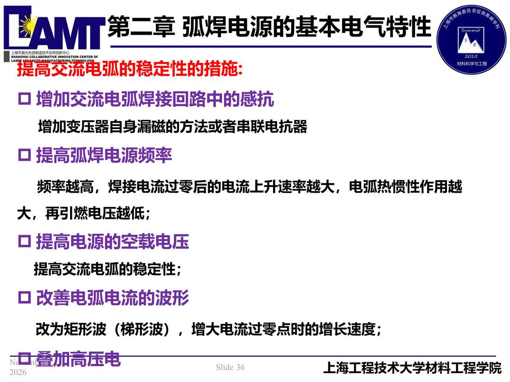

02 第2章 基本电气特性/p036 提高交流电弧的稳定性的措施
p036 提高交流电弧的稳定性的措施
📄 原文：📄 弧焊电源 课件（PDF 第 36 页）（幻灯片 36/273；PDF 第 36 页）
提高交流电弧的稳定性的措施

讲义原文
提高交流电弧的稳定性的措施:
-
增加交流电弧焊接回路中的感抗 增加变压器自身漏磁的方法或者串联电抗器
-
提高弧焊电源频率 频率越高，焊接电流过零后的电流上升速率越大，电弧热惯性作用越大，再引燃电压越低；
-
提高电源的空载电压 提高交流电弧的稳定性；
-
改善电弧电流的波形 改为矩形波（梯形波），增大电流过零点时的增长速度；
本页标红（老师强调）
- 提高交流电弧的稳定性的措施: